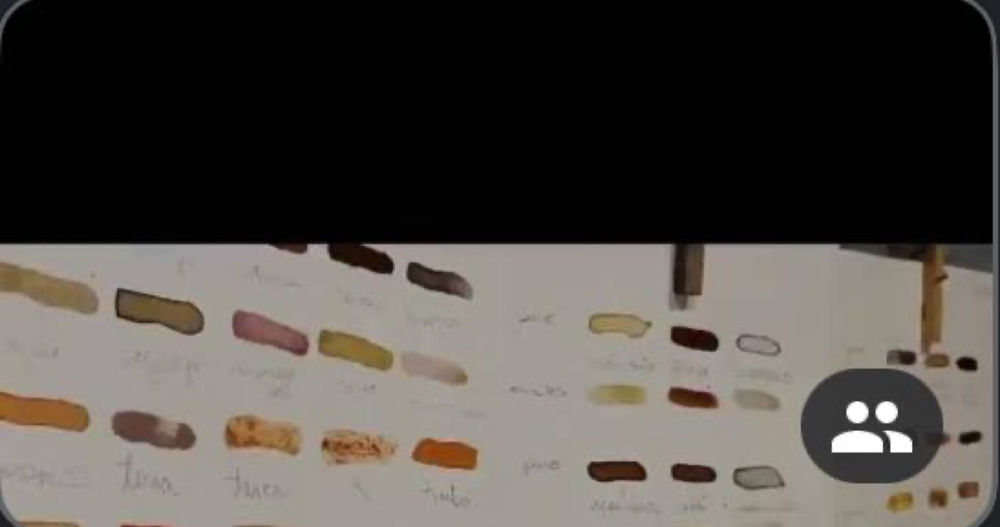
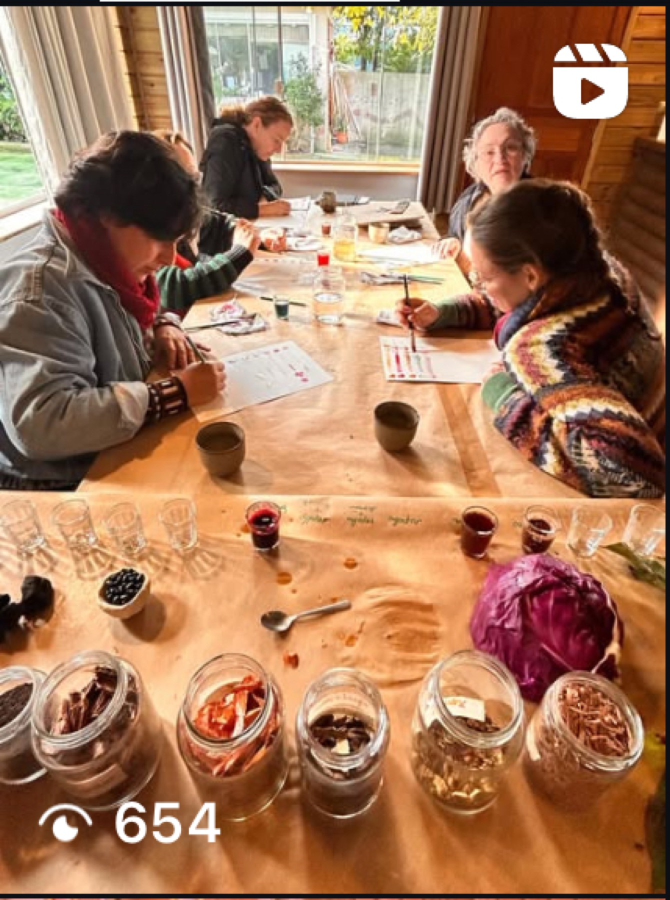
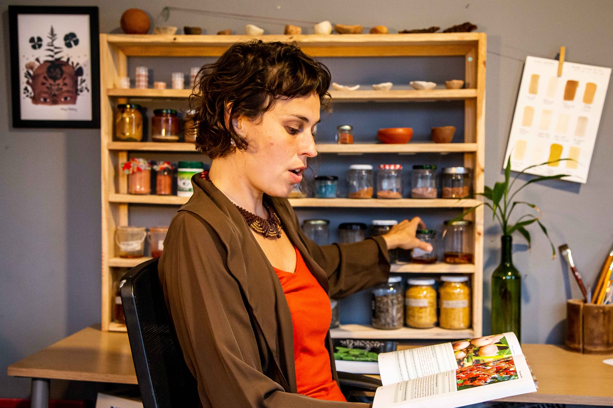

Oficinas e Residências
Encontros presenciais tácteis — pigmentos preparados à mão, matéria-prima coletada em território e um convite à autonomia criativa.



Aquarelas Naturais
Um encontro presencial rico e inspirador, com formatos para o público infantil e para o público adulto. Através de uma vivência dinâmica e participativa, Eliza oferece uma introdução ao universo dos pigmentos naturais, compartilha sua experiência e seu processo criativo, e apresenta passo a passo como fazer e aplicar uma paleta de cores variadas de aquarelas naturais feitas a partir de elementos acessíveis no dia a dia.
Uma oportunidade de instigar a curiosidade, inspirar um olhar criativo diante da natureza e conhecer recursos artísticos sustentáveis, seguros e acessíveis — valorizando saberes tradicionais brasileiros e a perspectiva ecológica.
Introdução ao universo das Tintas Naturais através de uma mesa decorada com as matérias-primas naturais usadas no preparo das cores. As crianças participam de cada etapa do preparo das tintas e fazem sua própria pintura, que podem levar de lembrança.
Introdução ao universo das Tintas Naturais, com as formas de extração, conservação e fixação das aquarelas. Os participantes acompanham cada etapa do preparo de uma vasta paleta de cores e, ao final, elaboram sua própria pintura com as tintas feitas.


Tintas de Terra
Uma vivência dinâmica e participativa introduz o universo dos pigmentos minerais. Eliza compartilha sua experiência e processo criativo, apresentando passo a passo como fazer e aplicar uma paleta de cores variadas de geotintas feitas a partir de terra coletada na região onde o curso acontece, entre outras opções.
Uma oportunidade para instigar a curiosidade, inspirar um olhar criativo diante da natureza, e conhecer recursos artísticos naturais, sustentáveis e acessíveis, que valorizam saberes tradicionais brasileiros.
Receber apresentação da oficina



Artista Multidisciplinar
Eliza compartilha seu conhecimento e experiência a respeito da multidisciplinariedade no âmbito artístico — um convite para refletirmos sobre a sociedade de consumo em que vivemos e elaborarmos possibilidades de desenvolver nosso processo criativo de maneira consciente, contrapondo-se à falsa percepção de dependência do mercado e de produtos industrializados para a expressão artística.
A artista convida o público a criar ferramentas artísticas básicas através de processos manuais e artesanais, utilizando recursos naturais do território em questão.
Receber apresentação da oficina


Residência Artística
Elaborada para quem quer um impulso para iniciar um novo projeto artístico. Eliza compartilha seu conhecimento sobre multidisciplinariedade e convida cada pessoa a mapear suas demandas pessoais e criar suas próprias ferramentas artísticas, através de um processo manual e artesanal que utiliza recursos naturais do território em questão.
Um diálogo com referências tradicionais e com a perspectiva ecológica de perceber e interagir com o ecossistema de forma responsável e consciente.
Receber apresentação da residência